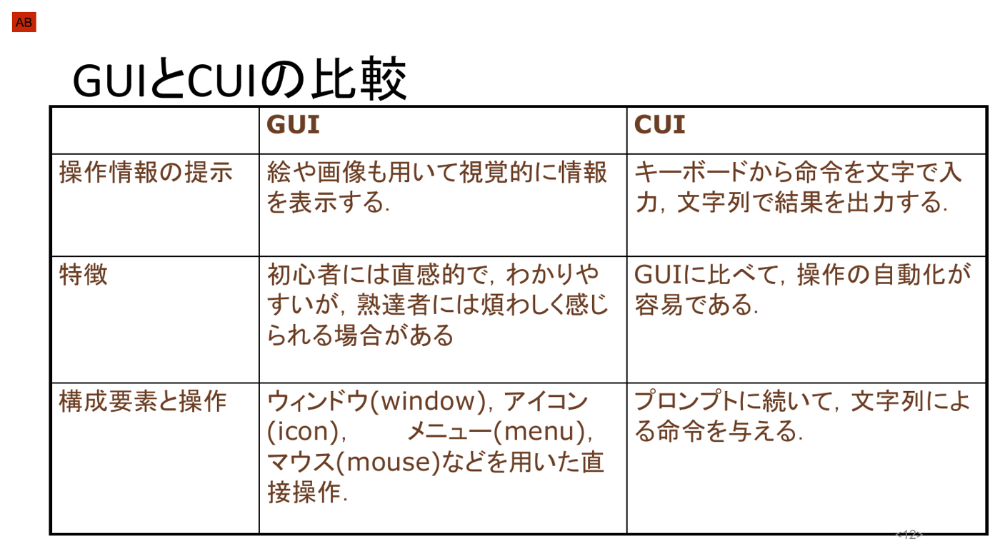
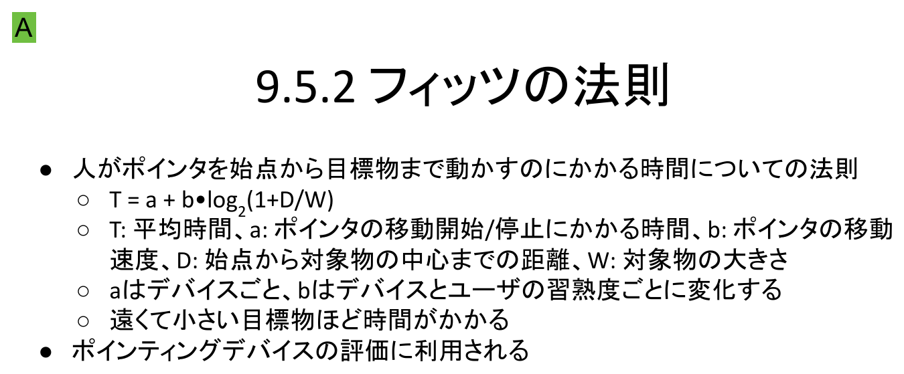

情報｜田中哲郎クラス講義ノート
このページは講義スライドの流れを節単位に組み直し、用語の関係と学習上の要点を説明する。入出力・GUI・アフォーダンス・評価を中心に、定義だけでなく、なぜ必要か、どのように使うかまで確認する。
この章の目的は、入出力機器の名称を暗記することではない。ドア、電灯のスイッチ、携帯電話、ワープロソフトという、一見なんの関係もない道具に共通して起こる「使いにくさ」を観察し、それがどこで、なぜ生じるかを説明できるようになることである。講義は次の4つの問いを軸に進む――ユーザインタフェースとは何を指すのか、実際にどのような例があるのか、良いインタフェースを作る方法はあるのか、そして良し悪しをどう測るのか。
人工物と人間の境界・接点をユーザインタフェース（user interface）という。人間は道具そのものの内部構造を直接操作するのではなく、必ずこの境界面を経由して道具とやり取りする。したがって、道具の性能がどれほど高くても、境界面の設計が拙ければ、人間はその性能を引き出せない。
講義ではまず、「世の中、かくも使いにくい物ばかり」ではないかという問題提起から入る。押すのか引くのか分からないドア、電灯とスイッチの対応関係が分からない配線、機種によって操作方法がまちまちな携帯電話、入力した文字を勝手に書き換えるワープロソフトの自動修正機能。これらはいずれも機能そのものが壊れているのではなく、人間が次に何をすればよいかを、道具の見た目や配置から読み取れないという共通の失敗を抱えている。
ドアの例は特に有名で、オランダ語の "Trekken"（引く）・"Duwen"（押す）のように、取っ手の形だけでは押す・引くの区別がつかないために、文字で注記を貼らざるを得ないドアが実例として紹介される。取っ手（インタフェース）の形状そのものが動作を暗示できていれば、注記なしでも人は迷わず操作できたはずである。この「見ただけで操作方法が分かるかどうか」という観点は、後述するアフォーダンスの考え方に直結する。
講義では「化粧室はどちらの方向にある?」という案内表示を見せ、①右、②左、③まっすぐ行った先、のどれを指しているかを受講者に投票させている。同じピクトグラムや矢印表示でも、配置場所や矢印の角度、周囲の壁・通路との位置関係によって複数の解釈が生まれてしまうことがある。標識という単純なインタフェースでさえ、設計者が意図した一つの意味が、利用者全員に同じように伝わるとは限らないことを示す例であり、後述する評価方法（利用者の解釈を実際に確かめること）の必要性につながる。
券売機のコイン投入口には、コイン詰まりを防ぐための棒（規制バー）が取り付けられていることがある。この棒は本来、複数枚のコインが同時に投入されて詰まるのを防ぐための機構部品にすぎない。ところが利用者の中には、この棒を見て「500円玉は右に入れるのか、左に入れるのか」という、設計者が想定していなかった意味（コインの投入位置を指示する目印）として解釈する者が現れる。
この行き違いが起こる理由は、インタフェースが、設計者の意図と利用者の解釈とを結ぶ唯一の接点であるためである。設計者は工夫（コイン詰まり防止の棒）を追加したつもりでも、その工夫が画面の外側にいる利用者にどう見えるかまでは、インタフェース自体を通してしか伝わらない。設計時に想定していなかった解釈をされてしまえば、その工夫は意図どおりには機能しない。
講義スライドは「セブンイレブン コーヒー テプラ」で検索することを勧めている。コンビニのコーヒーメーカーのボタン配置が分かりにくく、店舗側が手作りのラベル（テプラ）を貼って操作方法を補足した、という広く知られた事例で、正式なインタフェース設計だけでは伝わりきらなかった操作方法を、現場が事後的に紙のラベルで補っている点に注目したい。設計段階のインタフェースが不十分だと、運用段階で人手による応急的な補修が必要になる、という典型例である。
ユーザの心理的な世界（何をしたいか）とコンピュータの物理的な世界（電気信号としての処理）との相互作用は、入出力デバイス（input-output device, I/O device）と、その上での情報の表現方法を通してのみ行われる。ここで扱う機器は周辺機器の一覧としてではなく、インタフェースを具体的に実現する部品として理解する。
キーボードは最も一般的な文字入力デバイスで、配列はQWERTY配列が主流である。教科書では「タイプライターのアームが絡まないようにするため、あえて打ちにくい配列にした」という由来が紹介されることがあるが、この説明は誤りだとする指摘があることに注意したい。由来の真偽はともかく、一度広く普及した配列は、身体で覚えた操作の蓄積があるために、より効率のよい配列が提案されても置き換わりにくいという点は押さえておくとよい。
ポインティング・デバイスは、画面上の2次元的な位置情報を入力するための機器である。ここには2つの系統がある。
直接入力型は「触れた場所＝指し示した場所」なので対応関係が分かりやすい一方、画面を指で覆ってしまう、腕を上げ続ける疲労といった制約がある。間接入力型は手元の小さな動きで画面全体を操作できる利点があるが、手元の動きと画面上のポインタの対応関係を利用者が学習する必要がある。このほか、マイク、OCR機器、バーコードリーダなども入力デバイスに含まれる。
ディスプレイの歴史は、CRT（cathode ray tube, ブラウン管）からFPD（flat panel display, 平板ディスプレイ）への移行として整理できる。CRTは真空管の一種であり、原理上どうしても奥行きが必要になるため薄型化が難しかった。これに対しFPDは、液晶を利用したLCD（Liquid Crystal Display）、有機ELを利用したOLED（Organic Light Emitting Diodes）、PDP（Plasma Display Panel）などの方式があり、いずれも薄型・軽量化を実現した。このほかの出力デバイスとして、レーザープリンタ・インクジェットプリンタといった2次元の印刷装置に加え、3次元形状を出力する3Dプリンタが実用化されている。スピーカなど音声を出力する機器も出力デバイスに含まれる。

両者は「どちらが優れているか」という優劣の関係ではなく、それぞれ得意な場面が異なるという関係にある。
| GUI | CUI | |
|---|---|---|
| 操作情報の提示 | 絵や画像も用いて視覚的に情報を表示する。 | キーボードから命令を文字で入力し、文字列で結果を出力する。 |
| 特徴 | 初心者には直感的で分かりやすいが、熟達者には煩わしく感じられる場合がある。 | GUIに比べて、操作の自動化が容易である。 |
| 構成要素と操作 | ウィンドウ(window)・アイコン(icon)・メニュー(menu)・マウス(mouse)などを用いた直接操作。 | プロンプトに続いて、文字列による命令を与える。 |
「初心者に直感的だが熟達者には煩わしい」という評価は重要である。GUIは、目的の操作に対応するアイコンやメニューを画面上から探し、ポインティング・デバイスで指し示すという手順を踏む。この手順は初めての利用者には発見しやすい一方、同じ操作を毎回繰り返す熟達者にとっては、画面を探して手を動かすという手間そのものが遅く感じられる。CUIは目的の操作をコマンド名として直接文字入力できるため、手順を覚えてしまえば高速であり、さらに一連のコマンドをファイルにまとめて自動実行する（スクリプト化する）ことも容易である。利用者の習熟度や、操作を自動化する必要があるかどうかによって、適したインタフェースは変わる。
GUIは、ライトペンやビットマップディスプレイが実用化された1960年代に構想が始まった。アイバン・サザランドによるSketchpad（1963年）が初期の代表例として知られる。続いてアラン・ケイによるダイナブック構想（1968年）と、それを踏まえたAltoの開発が、個人が使うコンピュータとしてのGUIの方向性を決定づけた。その後、マッキントッシュ、Windows、（UNIX系の）X Window Systemの開発を通じてGUIは一般に普及した。さらに、静電容量方式によるタッチパッドの入力形式や、スクリーンと組み合わせたタッチスクリーンの開発によってタブレットコンピュータ（タブレット端末）が一般化し、ポインティング・デバイスを介さずに画面を直接操作するGUIが広まった。
この3つは独立した工夫ではなく、一つの狙いでつながっている。デスクトップメタファは「初めて見る画面でも、日常生活の知識から操作を類推できるようにする」工夫であり、直接操作・アフォーダンスは「見ただけで、どう扱えばよいかが分かる」ことを目指す、より一般的な設計原理である。WIMPは、その原理を具体的な画面要素（窓・絵・一覧・指示具）として実装した構成である。第9章の冒頭で見たドアや券売機の「使いにくさ」は、まさにこのアフォーダンスが欠けていた例だったと言い換えられる――取っ手や規制バーの形状を見ただけでは、押す・引くべきか、コインをどこに入れるべきかが伝わらなかったのである。
アフォーダンスは、事物そのものに内在する機能の名前ではなく、その事物と、それを利用する生体との関係として定義される概念である点に注意したい。同じ取っ手でも、体格や力の異なる人にとって「押しやすさ」は変わりうる。GUIにおける直接操作の設計は、特定の利用者だけでなく、多様な利用者にとってその関係が成立するように、アイコンの大きさ・配置・見た目を工夫することを意味する。
インタフェースが使いにくいと、ユーザ離れ、市場での競争力の低下、問い合わせなど顧客対応の増加といった具体的な不利益につながる。したがって「良い」インタフェースを設計するためには、感覚的に良し悪しを論じるのではなく、まず実証的に性能を評価することが重要になる。この実証的な評価はユーザビリティテストと呼ばれ、代表的な方法として次の4つがある。
4手法は測る対象が異なる。パフォーマンステストは実際の利用ログという事実を、ガイドライン法は既存の基準への適合度を、モデル法は行動モデルという理論的な予測を、インスペクション法は専門家の経験に基づく判断を、それぞれ評価の根拠にする。実際の開発では、コストの低いインスペクション法や、実装前でも適用できるモデル法を早い段階で使い、実装後にパフォーマンステストで実利用データを確認する、というように段階的に組み合わせることが多い。
モデル法の代表的な枠組みがGOMS（Goal, Operator, Method, Selection Rules）である。GOMS-KLM（キーストローク・レベル・モデル）は、GOMSの一手法であるキーストローク・レベル・モデルに適用されたもので、特定の作業にかかる時間の予測値によってインタフェースのユーザビリティを定量化する。作業をコンピュータの基本操作（キーを押して離す、クリック、マウスポインタの移動、など）へ分解し、各基本操作にかかる時間の目安を足し合わせることで、作業全体の所要時間を予測する。
| 記号 | 操作 | 所要時間 |
|---|---|---|
| K | キーボードの1つのキーを押して離す | 0.28 s |
| T(n) | キーボードからn文字入力する | n × Ks |
| P | 画面上の目標物までマウスポインタを移動する | 1.1 s |
| B | マウスのボタンを押す、あるいは離す | 0.1 s |
| H | キーボードからマウスへ手を移動する（あるいはその逆） | 0.4 s |
| M | 心理的な判断もしくは知覚 | 1.2 s |
| W(t) | システムの応答時間 | t s |
「ファイルのアイコンまでマウスポインタを移動する→マウスのボタンを押す→ゴミ箱のアイコンまで移動する→ボタンを離す→元の位置まで移動する」という一連の操作は、上の表の記号で P + B + P + B + P と書ける。数値を代入すると
となり、予測時間は約3.5秒である。実際にかかった時間との差が大きければ、想定していない基本操作（例えば途中でMの心理的判断が生じた、ドラッグ中に手が止まったなど）が挟まっている可能性を疑う手掛かりになる。
問：キーボードで5文字のコマンド名を入力し、Enterキーを押す操作をKLMの記号で表し、K=0.28sとして所要時間を求めよ（コマンド名の入力をT(5)、Enterの押下を1回のKとみなす）。
解：T(5)+K = 5×0.28 + 0.28 = 1.4+0.28 = 1.68秒。マウスに手を伸ばす必要がなければH（手の移動）は生じないため、キーボードだけで完結する操作はGUIより速く終わる場合がある――CUIが「操作の自動化・高速化に向く」という前節の説明を、KLMの数値でも裏付けられる。
フィッツの法則（Fitts's law）は、人がポインタを始点から目標物まで動かすのにかかる時間についての法則で、ポインティングデバイスの評価に広く利用される。
$T$：始点から目標物までポインタを移動させるのにかかる平均時間。
$a$：ポインタの移動開始・停止にかかる時間（デバイスごとに変化する）。
$b$：ポインタの移動速度に関する係数（デバイスとユーザの習熟度ごとに変化する）。
$D$：始点から対象物の中心までの距離。
$W$：対象物の大きさ（幅）。

式の形から、$D$（距離）が大きいほど、また$W$（対象物の大きさ）が小さいほど、$\log_2(1+D/W)$の値が大きくなり、所要時間$T$は長くなる。つまり遠くて小さい目標物ほど時間がかかる。逆に、目標物を大きくする、あるいは始点との距離を縮めることは、$a$や$b$を変えるデバイス自体の改良とは別に、インタフェース設計だけで到達時間を短縮できる手段であることが分かる。ボタンを大きくする、よく使う項目を画面の隅（マウスがそれ以上動かせない位置）に置く、といった設計上の工夫は、この法則が示す関係の直接の応用である。$a$、$b$の具体的な値はデバイスや利用者の熟練度によって実測される定数であり、講義スライド自体には特定の数値は示されていない。
ある画面で、始点からアイコンAの中心までの距離が$D=400$、アイコンAの幅が$W=40$であるとする。ポインティングデバイスの特性として、仮に$a=0.1$秒、$b=0.2$秒と与えられたとき、アイコンAへの到達時間$T$を求めよ。また、同じ$a,b$のもとで、距離が半分の$D=200$、幅が2倍の$W=80$であるアイコンBへの到達時間と比較せよ。（$a,b$の値は計算練習のために仮に置いた数値であり、講義スライドに示された実測値ではない。）
アイコンAは $T=0.1+0.2\log_2(1+400/40)=0.1+0.2\log_2(11)$。$\log_2 11 \approx 3.46$ なので、$T\approx0.1+0.2\times3.46\approx0.79$秒。
アイコンBは $T=0.1+0.2\log_2(1+200/80)=0.1+0.2\log_2(3.5)$。$\log_2 3.5\approx1.81$ なので、$T\approx0.1+0.2\times1.81\approx0.46$秒。
アイコンBの方が距離が短く幅が大きいため、到達時間は短い。「近づける」「大きくする」という2つの変更を同時に行うと、$\log_2$の中の$D/W$比が$400/40=10$から$200/80=2.5$へ4分の1になり、到達時間の差はさらに大きくなる。
用語を単独で暗記するのでなく、題材のどこにその概念が現れ、どの条件を根拠に判断するかを説明できるようにする。
入出力・GUI・アフォーダンス・評価は独立した暗記事項ではなく、情報を表現し、処理し、伝え、社会で安全に利用するための一連の考え方としてつながっている。各節の太字語を自分の言葉で説明できるか確認しよう。